Why route visual queries instead of sending everything to the biggest VLM?
A report on a general visual question-answering system that recognizes what kind of evidence a query needs, chooses an appropriate vision model and tools, and knows when the answer should be escalated or declined.
Pilot evidence: six paired-image cases, eight benchmarked models, 48 judged responses, GPT-5.1 judging, final score 0–4. The four-model lineup introduced below is a proposed routing design, not the identity of the pilot models.
1 · Motivation
Why should we care?
Visual questions about places are deceptively expensive. A user may ask whether a building changed, whether two views are comparable, or what evidence supports an answer. The system must separate persistent change from weather, lighting, crowds, framing, and camera position—then decide how much model capacity the question deserves.
Cost
Every query is not equally hard
Sending every image pair to a frontier model wastes latency and budget on easy comparisons.
Risk
Plausible answers can be wrong
A model may identify a real cue, then invent an unsupported architectural story.
Trust
Evidence matters
For schools, campuses, and places over time, the system should record why it answered and when it is uncertain.
Heilmeier Catechism framing: What are we trying to do? Build a visual query system that allocates model/tool effort by query difficulty. How is it done today? One VLM receives images and text and answers directly. What is new? A general router that combines place understanding, comparability checks, change reasoning, retrieval/evidence, tool use, and cost-aware escalation. Who cares? Users who need reliable answers about real places—not just fluent captions. What are the risks? False permanent-change claims, ungrounded evidence, and declining when the system should escalate.
2 · Query space
Different questions require different evidence.
The benchmark prompt is intentionally simple—“What changed between these two images?”—but a deployed system should generalize to several high-level query classes.
Query class
Example user question
Evidence needed
Likely route
Place over time
“What changed at this building between 2010 and today?”
Persistent vs transient change; temporal alignment; scene context.
Router → change specialist; escalate if structural.
Place / landmark recognition
“Where is this landmark, and what makes you confident?”
We ran the direct baseline: feed the image pair and the text query to a VLM, then judge whether the answer identifies the persistent change, handles confounders, and avoids unsupported claims.
23 / 48
Fully correct
Less than half of all judged responses were fully correct in the pilot.
14 / 16
Easy cases correct
Clean, aligned comparisons are a good fit for smaller models.
0 / 16
Hard cases correct
Every hard-case response was partial or incorrect; 12 had unsupported-change flags.
Mean score by difficulty
Easy
3.63
Medium
3.25
Hard
1.44
Why classify queries?
Easy: no meaningful structural change; framing, weather, or a person differs.
Medium: a visible object/state change is mixed with environmental confounders.
Opportunity: the naive approach is not uniformly bad—it is selectively reliable. That is exactly the opening for a router: keep the fast path where it works, and spend frontier/tool effort where the failure mode is costly.
3 · Proposed four-model lineup
Four VLMs across four query archetypes.
For a teaser system, use a deliberately heterogeneous ladder. These names are the requested design lineup; they should be evaluated head-to-head in the next experiment.
Query archetype
Default VLM
Why this pairing?
Escalation trigger
1. Scene condition / obvious change “Is the building unchanged except for snow, lighting, or framing?”
DeepSeek V4.1 Flash
Fast first pass; summarize obvious transient vs persistent differences.
Claims a structural change or reports low confidence.
2. Landmark / place recognition “What place is this, and what visual cues support it?”
Gemini 3.8 Flash
Recognition plus broad visual context and retrieval handoff.
Multiple candidate places or weak evidence.
3. Comparable-view / medium change “Are these views comparable, and did an object/state change?”
Claude Opus 5.5
More deliberate relational reasoning over alignment and confounders.
Fine architectural detail, conflicting evidence, or historical claim.
4. Persistent structural / agentic investigation “What was rebuilt, removed, or restored, and what evidence supports that?”
GPT-6 Luna
Highest-capacity path for multi-step reasoning, retrieval, and evidence synthesis.
Decline when evidence cannot support a persistent claim.
The system can generalize beyond these four examples: the router should classify the evidence requirements, not memorize case IDs.
4 · Prior work and gap
Adjacent literatures exist; the combination is the gap.
This proposal overlaps with several established fields, but the intended contribution is a general framework that connects them into one evidence- and budget-aware visual query system.
Place recognition and geolocation:NetVLAD and PlaNet establish strong visual place/geolocation primitives.
Visual agents and tools:VisualWebArena and SeeAct show the value and difficulty of grounding agents in visual environments and actions.
Model routing:FrugalGPT and RouteLLM motivate cost/quality-aware selection among language models.
Gap statement: prior work gives us components—change captioning, place recognition, comparability, retrieval, agents, and routing. The missing system-level framework is an auditable visual query router that chooses models and tools, records evidence, and knows when not to make a persistent-change claim, especially for real places such as a school or campus.
5 · Proposal teaser
What we propose.
Text query + image(s)→Query / evidence classifier→Model + tool plan
Compare identity, view, and persistence→Retrieve, crop, align, inspect→Answer with evidence + uncertainty
Route
Choose a cheap or expensive VLM based on ambiguity, persistence, and expected error cost.
Investigate
Use retrieval and visual tools only when they can resolve the specific uncertainty.
Decline safely
When images are not comparable or evidence is insufficient, say so rather than hallucinating a structural change.
Core claim to test: a router can improve cost-weighted reliability by preserving small-model performance on easy queries and selectively escalating hard visual reasoning.
Pilot appendix
Benchmark evidence by case.
The following sections preserve the input query, images, reference expectation, and every judged model response. They are the empirical basis for the motivation above.
Case E1
EASY visual change
Input text query: “What changed between these two images?”
easy
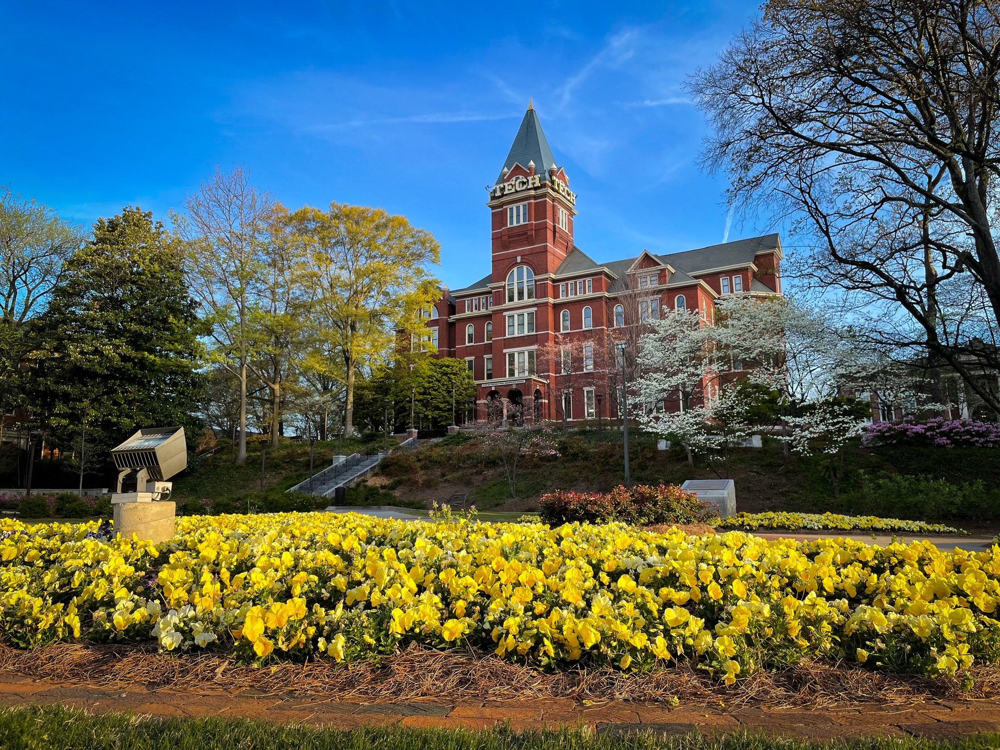
Image A · E1
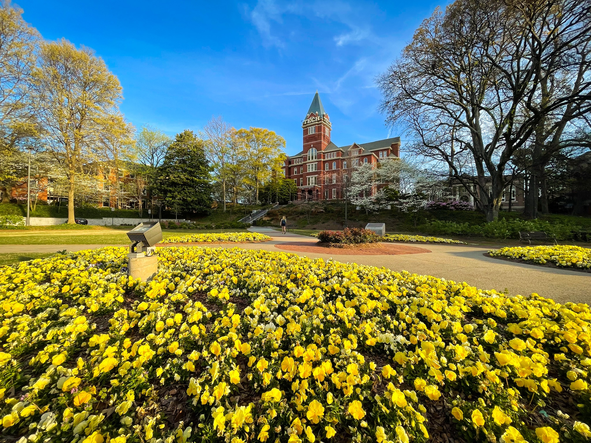
Image B · E1
Reference expectation
Both images show Tech Tower from approximately the same viewpoint. No structural change to the building is visible. The main differences are camera framing/zoom and temporary scene content; the second image shows a wider area and includes a person.
OPENAI_FRONTIER_VISIONcorrect4/4
“There is no visible structural change to the building, paths, lights, or general layout; they appear the same in both images. The main differences are due to framing and environment: Image A is taken closer to the flower bed and lower to the ground, while Image B is taken farther back and higher, showing more of the surrounding walkway and park. Image B also includes a person walking on the path, which is not present in Image A.”
Judge rationale
Correctly states there is no structural change and attributes differences to framing and transient scene content without inventing architectural changes.
3.5s
GEMINIcorrect4/4
“Based on the images provided, there are no visible structural or physical changes to the location itself. The primary difference is the framing and perspective; Image B was taken with a much wider-angle lens, which reveals more of the paved pathways, the surrounding trees, and an adjacent building on the far left. The only other notable difference is the temporary presence of a person walking in the midground of Image B.”
Judge rationale
Correctly states there is no structural change and only notes framing, wider view, and a person as differences without inventing any architectural changes.
21.5s
QWENcorrect4/4
“The most significant visible difference is the presence of a person walking on the path in Image B, who is absent in Image A. The framing is also slightly wider in Image B, revealing more of the surrounding trees and pathways on the left and right. The lighting and shadows appear nearly identical, suggesting the photos were taken very close in time. No persistent physical or structural changes to the building or landscape are visible.”
Judge rationale
Correctly states there is no structural change, accurately notes framing and transient content differences, and does not invent any architectural changes.
37.3s
GEMMAcorrect4/4
“The most noticeable difference between the two images is the presence of a person walking on the path in Image B, who is absent in Image A. Additionally, the lighting appears slightly different, with Image B appearing a bit brighter overall. The framing is also subtly altered, with Image B capturing a wider view of the surrounding landscape. No persistent physical or structural changes are visible between the two images.”
Judge rationale
Correctly states there is no structural change and only notes transient differences like a person, framing, and lighting without inventing architectural changes.
5.4s
LLAMAcorrect4/4
“The most notable difference between the two images is the camera's perspective and framing. Image B is taken from a slightly different angle, capturing a wider view of the surrounding area, including more of the walkway and the trees on the left side. The composition of the images differs, with Image A focusing more on the building and Image B showing more of the foreground flowers and the path. No other significant structural or environmental changes are visible between the two images.”
Judge rationale
Correctly states there is no meaningful structural change and attributes differences to framing and scene content without inventing architectural changes.
12.7s
MISTRALcorrect4/4
“The most notable difference between the two images is the presence of a person in Image B, who is walking in the garden area, while Image A does not show any people. Additionally, the lighting and shadows suggest that the images were taken at slightly different times of day, with Image B having slightly longer shadows. The vegetation, particularly the yellow flowers, appears to be in the same state in both images, indicating no significant change in the plant life. There are no visible structural or physical changes to the building or the surrounding area between the two images.”
Judge rationale
Correctly identifies no structural change to the building and treats differences as transient scene or lighting variations without inventing architectural changes.
4.8s
CLAUDEpartially correct2/4
“Looking at these two images of the same campus location, I can identify several differences:
The most notable change is in the flower beds - Image A shows the yellow flowers arranged in a more linear, rectangular pattern, while Image B shows them in curved, flowing beds that follow the natural contours of the landscape. The pathways and walkway configuration also appear different, with Image B showing more curved pathways compared to the more geometric layout in Image A.
Additionally, there's a person visible walking in the middle area of Image B who is not present in Image A, and the camera angle/framing is slightly different between the two shots, with Image B taken from a somewhat different vantage point that shows more of the curved flower bed design.
The building, trees, and overall landscape structure remain the same between both images.”
Judge rationale
While it correctly notes no building change and mentions framing and a person, it invents changes to flower beds and pathways, confusing transient scene differences with structural changes.
8.0s · unsupported-change flag
KIMIincorrect0/4
“Image B shows a new circular paved plaza with brick patterns in the middle ground and a bench on the right that are absent in Image A. The trees display seasonal progression with fuller spring foliage, and a person is present in Image B. Image B is captured from a wider angle positioned further left.”
Judge rationale
The response invents new physical scene elements and seasonal changes instead of emphasizing that there is no meaningful structural change to the building.
175.1s · unsupported-change flag
Case E2
EASY visual change
Input text query: “What changed between these two images?”
easy
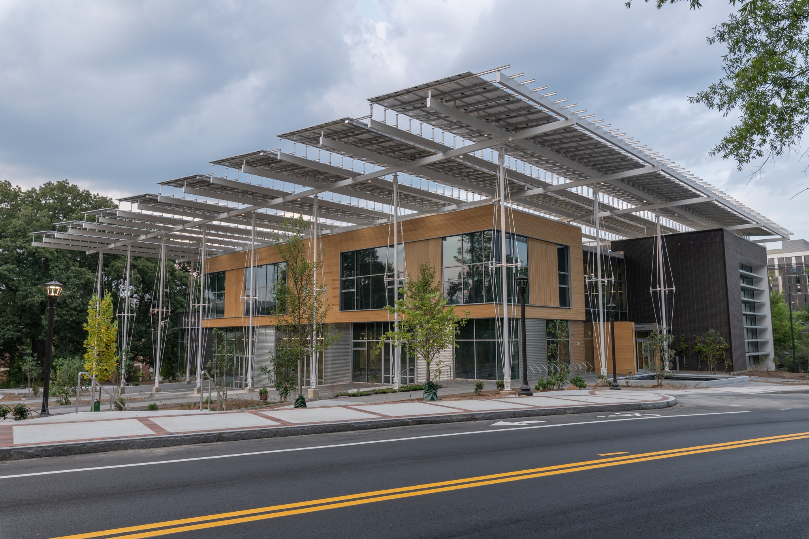
Image A · E2
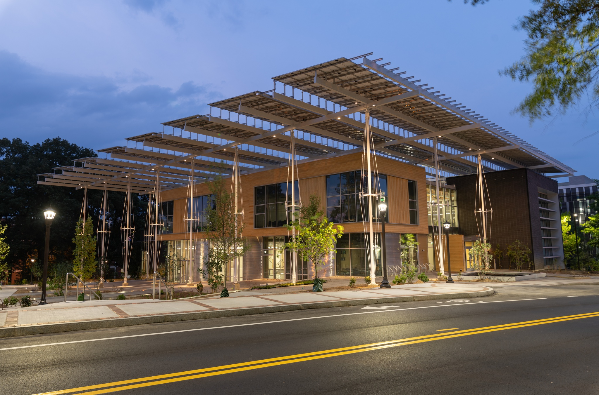
Image B · E2
Reference expectation
Both images show Kandeda Building from approximately the same viewpoint. No meaningful structural change is visible. Differences are mainly illumination, sky/weather, and minor temporary/environmental details.
OPENAI_FRONTIER_VISIONcorrect4/4
“There is no visible structural or physical change to the building, street, or surrounding features between the two images. The differences are environmental: Image A is taken in daylight under overcast skies, while Image B is taken at dusk or night with artificial lights on the building and streetlamps, giving the scene a warmer, brighter appearance.”
Judge rationale
Correctly states there is no structural change and attributes differences only to lighting and weather without inventing architectural changes.
4.7s
GEMINIcorrect4/4
“Based on the images provided, there are no persistent physical or structural changes to the building, street, or landscaping. The only differences are temporary environmental and lighting changes due to the time of day. Image A was taken during the daytime under an overcast sky, while Image B was taken at dusk, resulting in the streetlamps, exterior canopy lights, and interior building lights being illuminated.”
Judge rationale
Candidate correctly states there are no structural changes and only describes lighting and weather/time-of-day differences without inventing any physical modifications.
19.8s
CLAUDEcorrect4/4
“The most significant change between these two images is the lighting conditions - Image A shows the building during daytime with natural lighting, while Image B shows the same building at dusk or evening with artificial lighting illuminated throughout the structure and canopy. The building's architectural lighting system is clearly visible in Image B, with lights integrated into the solar panel canopy structure and interior lighting visible through the windows. The sky has also changed from a lighter daytime appearance to a deeper blue evening sky. No structural or physical changes to the building itself are visible between the two images.”
Judge rationale
Correctly states there is no structural change and attributes differences to lighting and sky conditions without inventing architectural changes.
5.4s
QWENcorrect4/4
“There are no persistent physical or structural changes between the two images; the building, its solar canopy, and surrounding landscape are identical. The differences are entirely environmental and temporal: Image A is taken during the day under an overcast sky, while Image B is captured at dusk or night, with artificial lights turned on and a darker, blue-toned sky. The lighting conditions alter the appearance of the building’s materials and create reflections in the windows, but no permanent alterations are visible.”
Judge rationale
Correctly states there is no structural change and attributes all differences to lighting and time-of-day without inventing any architectural modifications.
14.3s
GEMMAcorrect4/4
“The most noticeable difference between the two images is the lighting and sky conditions. Image A depicts a cloudy, overcast sky, while Image B shows a clear, twilight sky. This change in lighting affects the overall brightness and color tone of the scene, with Image B appearing warmer and more illuminated. No persistent physical or structural changes to the building or surrounding environment are visible.”
Judge rationale
Correctly states there is no structural change and attributes differences only to lighting and sky conditions without inventing any physical modifications.
4.0s
LLAMAcorrect4/4
“The most notable difference between the two images is the lighting condition. Image A appears to be taken during the daytime with a cloudy sky, while Image B is captured at dusk or early evening with a darker blue sky and artificial lighting illuminating the building and street lamps. The building's structure and surroundings remain unchanged, indicating no persistent physical or structural changes. The primary difference lies in the time of day and the corresponding lighting conditions.”
Judge rationale
Correctly states there is no structural change and attributes differences only to lighting and time-of-day/sky conditions without inventing architectural changes.
6.5s
MISTRALcorrect4/4
“The most important difference between the two images is the lighting. Image A is taken during the day with natural daylight, while Image B is taken at night with artificial lighting illuminating the building and its surroundings. The sky in Image A is cloudy, whereas in Image B, the sky is clear with a blue hue, indicating it is dusk or early evening. There are no visible structural changes between the two images.”
Judge rationale
Correctly states there are no structural changes and only describes differences in lighting and sky conditions without inventing architectural changes.
16.6s
KIMIcorrect4/4
“The most significant difference is the **time of day and lighting conditions**: Image A was taken during daylight with overcast skies, while Image B was captured at twilight or night. Consequently, the **street lamps are illuminated in Image B** but off in Image A, and **interior lights are visible through the building's windows in Image B**. The sky has changed from cloudy gray to deep blue.
No persistent physical or structural changes to the building, landscaping, or streetscape are visible between the two images.”
Judge rationale
Correctly states there is no structural change and attributes differences to lighting, time of day, and sky without inventing architectural changes.
34.2s
Case M1
MEDIUM visual change
Input text query: “What changed between these two images?”
medium
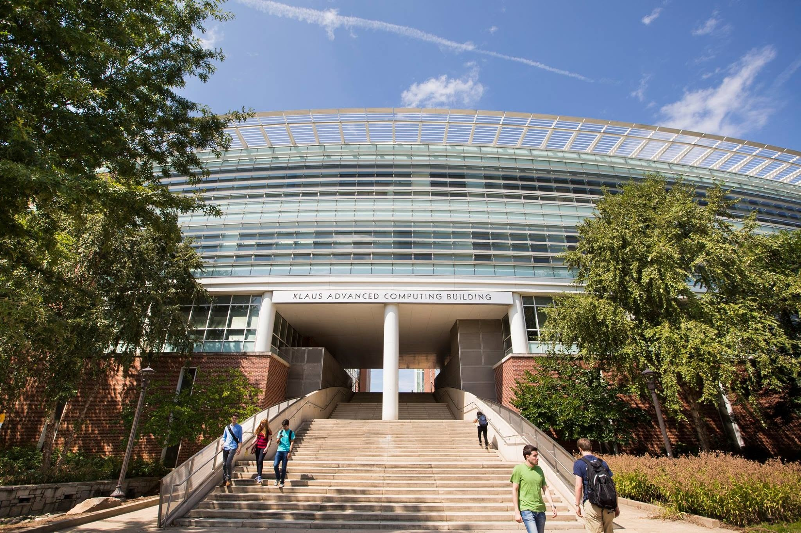
Image A · M1
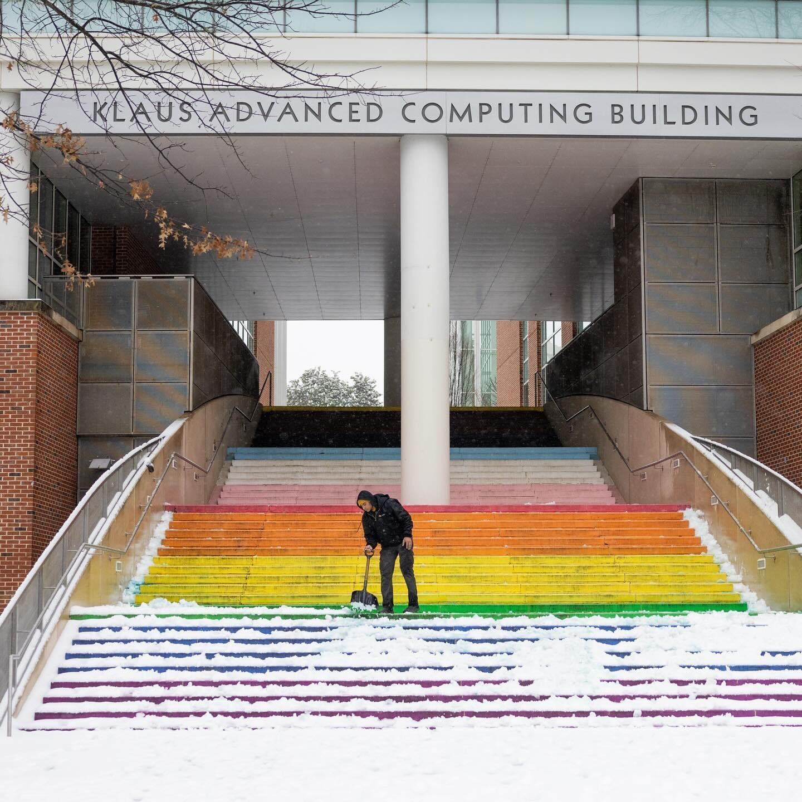
Image B · M1
Reference expectation
The staircase has been painted in multiple colors in the second image. The second image also shows snow and winter conditions. The building entrance and main structural elements appear unchanged.
OPENAI_FRONTIER_VISIONcorrect4/4
“The building structure itself appears unchanged.
A key physical change is that the central staircase has been painted in rainbow colors in Image B, while it is plain concrete in Image A.
Temporary/environmental differences include snow covering the steps and ground in Image B, different people present, and seasonal vegetation and lighting changes.”
Judge rationale
Correctly identifies the painted staircase as the main change, notes the building is structurally unchanged, and treats snow and other seasonal elements as environmental differences without adding unsupported structural claims.
23.1s
GEMINIcorrect4/4
“The most prominent physical change between the two images is that the stair risers, which are plain concrete in Image A, have been painted with a rainbow pattern in Image B. The other visible differences are temporary and environmental. Image A depicts a sunny day with green foliage and several pedestrians, whereas Image B shows a snowy day with bare tree branches and a single person shoveling snow.”
Judge rationale
Correctly identifies the painted staircase and treats weather as an environmental change without adding structural changes, but omits explicitly noting that the building entrance/structure is unchanged.
18.6s
QWENcorrect4/4
“The most significant visible difference is the presence of snow covering the rainbow-painted steps and ground in Image B, which is absent in Image A. The steps in Image B are painted in rainbow colors, while in Image A they are plain concrete. The foliage on the trees is full and green in Image A, but bare in Image B, indicating a seasonal change. The number and attire of people differ, consistent with different weather conditions. No permanent structural changes to the building itself are visible.”
Judge rationale
Correctly identifies the painted staircase as the main change, notes snow/winter as environmental, and explicitly states there are no structural changes to the building.
13.3s
GEMMAcorrect4/4
“The most significant change between the two images is the presence of snow covering the stairs and surrounding areas in Image B, which is absent in Image A. Additionally, the stairs in Image B have been painted with rainbow colors, while they are a plain concrete color in Image A. There are also differences in the people present and the surrounding vegetation – Image A shows more foliage and people walking, while Image B features a single person clearing snow and sparser vegetation. These changes appear to be temporary environmental and decorative differences rather than structural alterations to the building itself.”
Judge rationale
Correctly identifies the painted staircase as the main change, notes snow as an environmental difference, and explicitly states there are no structural building changes.
5.5s
LLAMAcorrect4/4
“The most notable differences between the two images are the presence of snow in Image B and the rainbow-colored stairs, which are not visible in Image A. The weather and season have changed, with Image A showing a clear blue sky and lush greenery, while Image B depicts a snowy scene with bare tree branches. The stairs' color change is a persistent physical alteration, while the snow and weather conditions are temporary environmental differences.”
Judge rationale
Correctly identifies the painted staircase and snow as environmental change without adding structural changes, but does not explicitly state that the main building entrance/structure is unchanged.
7.4s
MISTRALcorrect4/4
“The most important differences between the two images are the presence of snow in Image B and the colorful steps, which are not visible in Image A. The weather in Image A is clear and sunny, while in Image B, it appears to be cold and snowy. Additionally, there are people walking in Image A, whereas in Image B, there is a person shoveling snow. The vegetation in Image A is lush and green, while in Image B, it is covered in snow. There are no visible persistent physical or structural changes to the building itself.”
Judge rationale
Correctly identifies the newly colorful staircase and snow as environmental change while explicitly stating there is no structural change to the building.
6.2s
CLAUDEpartially correct3/4
“The most significant change between these two images is that the stairs have been painted with rainbow/pride flag colors in Image B, while they appear to be plain concrete/stone colored in Image A. Additionally, Image B shows snow coverage on the ground and stairs, while Image A shows clear, dry conditions with green foliage. The season has also changed from what appears to be summer/fall (with lush green trees) in Image A to winter (with bare tree branches) in Image B.
The rainbow painting of the stairs represents a permanent structural/decorative change to the building's entrance, while the snow and seasonal vegetation differences are temporary environmental changes.”
Judge rationale
Correctly identifies the painted staircase and winter conditions but incorrectly characterizes the change as a structural/decorative modification to the building entrance instead of noting the structure is unchanged.
5.2s · unsupported-change flag
KIMIpartially correct3/4
“The stairs have been painted in rainbow colors in Image B (a persistent physical change), while Image A shows plain concrete stairs. Temporarily, Image A depicts a sunny summer day with green trees and pedestrians, whereas Image B shows winter with snow covering the ground and stairs, bare trees, and a person shoveling snow.”
Judge rationale
Correctly identifies the painted staircase and winter conditions but omits mention that the building structure is unchanged and adds extra unsupported scene details.
45.3s · unsupported-change flag
Case M2
MEDIUM visual change
Input text query: “What changed between these two images?”
medium
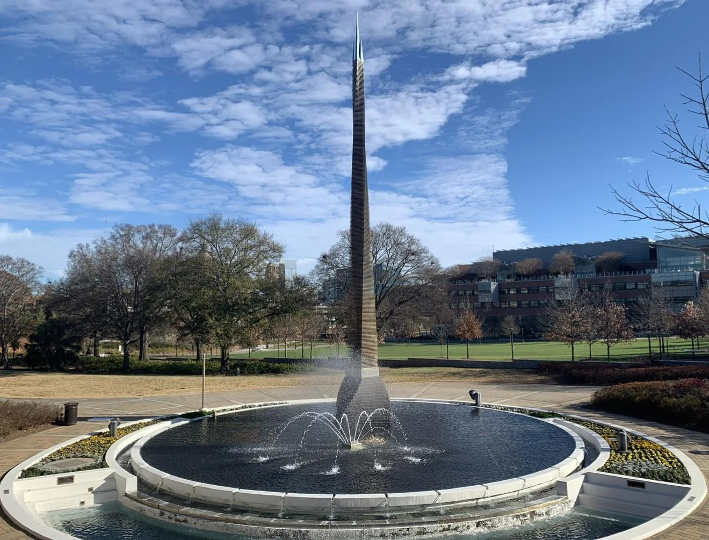
Image A · M2
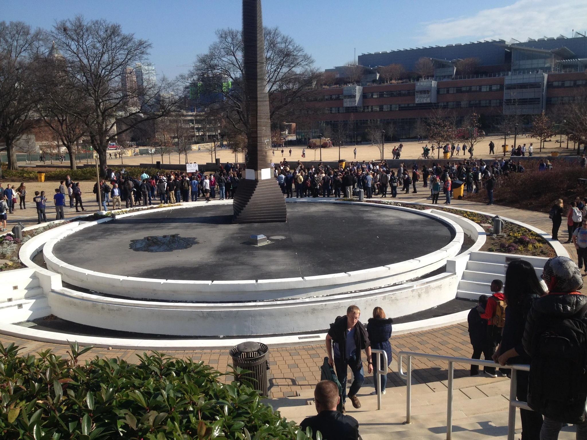
Image B · M2
Reference expectation
The fountain is filled and operating with water jets in the first image, while it is empty or turned off in the second. The second image also contains a large crowd. No clear structural change to the Campanile or fountain structure is visible.
CLAUDEcorrect4/4
“The most significant change between these two images is that the circular fountain pool is filled with water and operating in Image A, while it appears to be drained and empty in Image B. In Image A, water fountains are actively spraying from the center, whereas in Image B, the pool basin is dry with no water visible. Additionally, there are many more people gathered around the fountain area in Image B compared to the relatively empty scene in Image A. The tall central spire structure and overall layout of the fountain remain unchanged between the two images.”
Judge rationale
Accurately describes the fountain’s operational change, notes the larger crowd as a transient difference, and explicitly states there is no structural change.
4.2s
QWENcorrect4/4
“The most significant visible difference is that the fountain in Image A is active with water spraying, while in Image B, the fountain basin is dry and empty. Additionally, Image B shows a large crowd of people gathered around the monument, whereas Image A is nearly devoid of people. The lighting and shadows suggest different times of day or weather conditions, but no permanent structural changes to the monument, fountain, or surrounding buildings are visible.”
Judge rationale
Accurately describes the fountain’s operational change, notes the larger crowd as transient, and explicitly states no structural changes, with only a minor extra comment about lighting conditions.
14.3s
MISTRALcorrect4/4
“The most important difference between the two images is the presence of a large crowd of people in Image B, which is absent in Image A. Additionally, the fountain in the center of the structure is active with water in Image A, but it is turned off in Image B. The weather and lighting conditions appear similar, and there are no visible structural changes to the environment.”
Judge rationale
Accurately describes the fountain’s operational change, notes the larger crowd as transient, and correctly states there are no structural changes without adding unsupported claims.
7.2s
GEMMApartially correct3/4
“The most significant change between the two images is the presence of a large crowd of people surrounding the fountain in Image B, which is absent in Image A. Additionally, the fountain in Image A is actively spraying water, while the fountain in Image B appears dry. The vegetation appears slightly different, with more visible leaves and greenery in Image A compared to the more bare trees in Image B, suggesting a possible seasonal difference. Otherwise, the structural elements of the monument and surrounding buildings remain consistent.”
Judge rationale
Correctly identifies fountain on/off state, lack of structural change, and larger crowd, but adds an unsupported claim about vegetation/seasonal differences.
5.0s
OPENAI_FRONTIER_VISIONpartially correct2/4
“The main structural change is the fountain basin: in Image A it is filled with water and has multiple active water jets, while in Image B the basin is empty and dry, with a visible patch or depression on its surface. The central obelisk-like structure and surrounding circular walls, steps, and nearby buildings appear unchanged. The presence of many people in Image B versus none in Image A, as well as differences in lighting and vegetation, are temporary environmental differences.”
Judge rationale
Correctly describes the operational change of the fountain and crowd difference but incorrectly frames the basin state as a structural change and adds an unsupported patch/depression detail.
6.1s · unsupported-change flag
LLAMApartially correct2/4
“The most notable differences between the two images are the presence of people and the state of the fountain. In Image A, the fountain is operational with water flowing from it, while in Image B, the fountain appears to be dry and not functioning. Additionally, Image B shows a large crowd of people gathered around the fountain, whereas Image A has very few people visible. The vegetation in the surrounding area also appears more barren in Image B, suggesting a possible difference in the time of year or weather conditions.”
Judge rationale
Correctly describes fountain state and crowd difference but adds an unsupported environmental change and omits the explicit note that there is no structural change.
6.8s
KIMIpartially correct2/4
“The fountain is active with water spraying in Image A, but the basin is dry and inactive in Image B. Image B shows a large crowd of people gathered around the monument, while Image A has no people. The trees have foliage in Image A but are bare in Image B, indicating different seasons.”
Judge rationale
Correctly describes the fountain and crowd changes but adds an unsupported seasonal/tree-change claim and omits stating that there is no structural change.
73.9s · unsupported-change flag
GEMINIincorrect1/4
“The most prominent physical difference is the state of the fountain; in Image A, it is filled with water with active spraying jets, whereas in Image B, the basin is completely dry. Additionally, the monument in Image B features a distinct white band around its lower section that is not present in Image A. A major temporary difference is the large crowd of people gathered in the background and foreground of Image B, while Image A is devoid of people.”
Judge rationale
Correctly describes the fountain’s operational change and the added crowd but introduces an unsupported structural difference on the monument and fails to state that there is no structural change.
19.4s · unsupported-change flag
Case H1
HARD visual change
Input text query: “What changed between these two images?”
hard
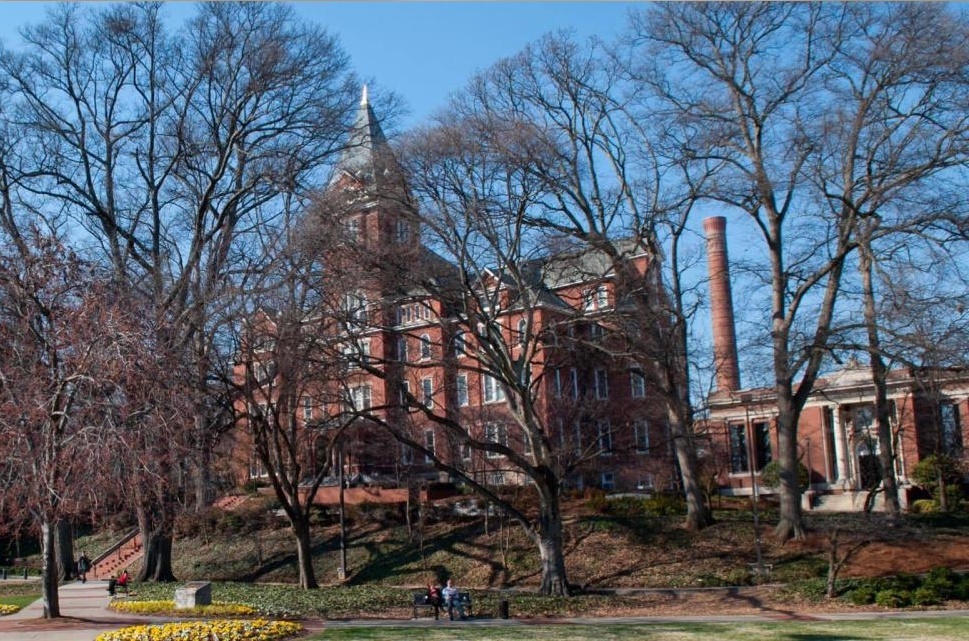
Image A · H1
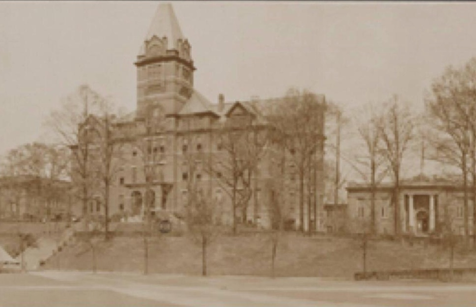
Image B · H1
Reference expectation
The same central building remains, but the surrounding campus environment has changed substantially. The 2018 image has much more mature vegetation and different landscaping, paths, and surrounding structures. Some structures visible in the 1918 scene are no longer present, while newer campus elements appear in the modern image. Differences in color should not be treated as architectural change because the 1918 photograph is monochrome/sepia.
OPENAI_FRONTIER_VISIONpartially correct2/4
“The main buildings and overall layout appear structurally the same in both images.
In Image A, the trees are fuller and leafless but more mature, and there are landscaped flower beds and paved walkways in the foreground that are not visible in Image B.
Image A also shows benches and people on the paths, which are absent in Image B.
No major permanent structural changes to the central building or the smaller building on the right are clearly visible.”
Judge rationale
Acknowledges some environmental and landscaping differences while keeping the central building unchanged, but incorrectly asserts overall structural sameness of the surroundings and omits substantial campus and vegetation changes.
32.9s · unsupported-change flag
GEMINIpartially correct2/4
“The most significant structural difference between the two images is the presence of a tall brick smokestack between the main building and the smaller building on the right in Image A, which is completely absent in Image B. Environmentally, the trees in Image A are significantly larger and more mature than the younger trees seen in Image B. Additionally, the foreground landscaping has changed from a mostly bare, unpaved surface in Image B to include paved walkways, benches, and flower beds in Image A, alongside the obvious shift from a sepia-toned photograph to a modern color image.”
Judge rationale
The answer notes environmental and landscaping changes but reverses the vegetation maturity, invents a specific smokestack change, and omits mention that the central building remains the same.
18.7s · unsupported-change flag
MISTRALpartially correct2/4
“The most important differences between the two images are the presence of color and vibrant vegetation in Image A, indicating a more recent time with better weather and lighting conditions. Image B, being in black and white, shows a more barren landscape with leafless trees, suggesting a different season or an older time period. There are no visible structural changes to the buildings; the persistent elements include the main building with the spire, the smaller building to the right, and the general layout of the area. The image quality and framing are also different, with Image A being clearer and more vibrant.”
Judge rationale
Correctly notes the same main building and some vegetation difference but fails to describe substantial campus, landscaping, and structural context changes and misattributes differences to transient conditions.
6.1s
CLAUDEincorrect1/4
“The most significant structural change between these images is the addition of a tall brick smokestack/chimney that appears in Image A but is absent in Image B. The main building with the distinctive tower remains largely the same in both images, maintaining its architectural features and overall structure. The building on the right side also appears consistent between both time periods. Beyond this major addition of the smokestack, the core buildings and their positioning show remarkable persistence across what appears to be a considerable time span.”
Judge rationale
The response focuses on a smokestack and claims specific structural persistence/changes not mentioned in the ground truth, while failing to describe the substantial environmental and landscaping changes around the central building.
3.2s · unsupported-change flag
QWENincorrect1/4
“The most significant visible difference is the presence of a tall, red brick smokestack in Image A, which is absent in Image B. The trees in Image A are bare, suggesting a different season or time of year compared to Image B, where some trees appear to have more foliage or are less starkly bare. Image A is in color and shows modern landscaping with flowerbeds and benches, while Image B is sepia-toned and shows a less developed foreground. No major structural changes to the main building are evident beyond the addition of the smokestack.”
Judge rationale
The answer misses the core long-term campus and vegetation changes, introduces an unsupported smokestack and specific modern features, but correctly treats sepia vs. color as an image difference rather than a structural change.
10.5s · unsupported-change flag
GEMMAincorrect1/4
“Here's a concise analysis of the changes between the two images:
The most noticeable difference is the color – Image A is in full color, while Image B is a sepia-toned, older photograph. The vegetation has changed significantly; Image A shows bare trees, while Image B has more foliage. Additionally, the landscaping around the building appears different, with more defined pathways and flowerbeds in Image A. The brickwork of the building in Image A appears cleaner and more vibrant than in Image B.”
Judge rationale
Captures some environmental and landscaping differences but misstates vegetation maturity and implies a material change in the building’s brickwork, while failing to clearly affirm the central building’s continuity.
4.7s · unsupported-change flag
LLAMAincorrect0/4
“The most notable differences between the two images are the color and quality. Image A is in color and has a clear, high-quality resolution, while Image B is sepia-toned and appears blurry or low-resolution. The vegetation in front of the building has also changed, with yellow flowers visible in Image A but not in Image B. Additionally, people are present in Image A but not visible in Image B.”
Judge rationale
The response focuses on color, image quality, flowers, and people, and fails to mention the persistent central building or the substantial changes in surrounding campus, vegetation maturity, landscaping, and structures.
6.5s
KIMIincorrect0/4
“The tower architecture changed significantly from an ornate crenellated design with a clock in Image B to a simpler pointed spire in Image A. A tall brick chimney visible to the right of the main building in Image A is entirely absent in Image B. The main building's facade, window arrangements, and foreground landscape grading also differ substantially between the two images.”
Judge rationale
The response incorrectly claims major architectural changes to the central building instead of recognizing it as the same structure with changed surroundings and vegetation.
49.7s · unsupported-change flag
Case H2
HARD visual change
Input text query: “Compare these two images of the same building. What changed?”
hard
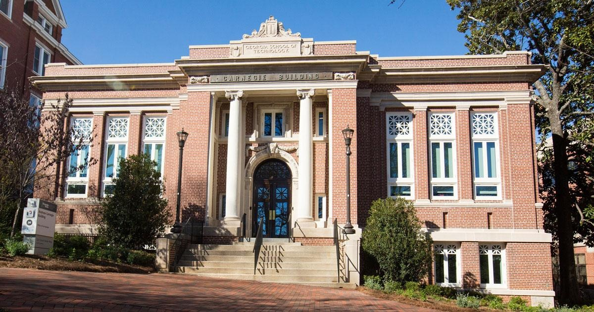
Image A · H2
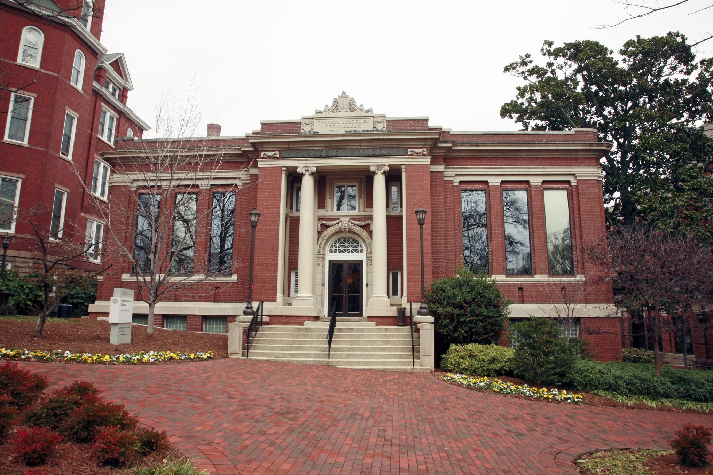
Image B · H2
Reference expectation
The overall structure and architectural form remain the same. The later image reflects restoration work, including changes to windows/doors and restoration of historic exterior details. The masonry/exterior also appears cleaner. The model should not claim that major structural elements such as the columns, roofline, or building footprint changed.
OPENAI_FRONTIER_VISIONpartially correct2/4
“The building’s structure appears unchanged.
The windows differ: in Image A the tall side windows have decorative white grilles and blue-tinted panes, while in Image B they are plain reflective glass.
Vegetation and landscaping are different, with fuller green trees and shrubs in Image A and barer trees and different flower beds in Image B.
Lighting and sky conditions also differ (sunny blue sky in Image A vs. overcast in Image B).”
Judge rationale
Correctly notes that the structure is unchanged and that windows differ, but omits mention of restored/cleaner masonry and adds specific, ungrounded details about window styling, vegetation, and sky conditions.
3.5s · unsupported-change flag
GEMINIpartially correct2/4
“Based on the images, the most significant structural changes involve the building's windows. In Image A, the large side windows feature white, geometrically patterned grilles, whereas in Image B, they are undivided panes of dark, reflective glass. Conversely, the arched transom window above the main entrance has dark glass in Image A but displays a prominent white, fan-shaped grille in Image B. Additionally, the lower-level windows on the right side have white frames in Image A, while they appear as glass blocks in Image B, alongside expected seasonal differences in vegetation and lighting.”
Judge rationale
Captures that window/entrance details differ but omits the unchanged overall structure and cleaner/restored exterior, and adds specific, unsupported structural details about window types and patterns.
19.8s · unsupported-change flag
CLAUDEpartially correct2/4
“Comparing these two images of the Carnegie Building, the most significant structural change is that the windows have been altered. In Image A, the windows have decorative geometric patterns or grillwork in the upper portions, while in Image B, these same windows appear to have plain glass without the decorative elements.
The building's overall structure, columns, entrance, and architectural details remain the same. Other differences like the seasonal vegetation, lighting conditions, and landscaping are temporary environmental changes rather than permanent structural modifications.”
Judge rationale
The answer correctly notes that the overall structure is unchanged and focuses on window differences while handling environmental changes properly, but it overstates a specific structural alteration to the windows that is not supported by the ground truth and omits mention of the cleaner/restored exterior.
9.3s · unsupported-change flag
GEMMApartially correct2/4
“The most noticeable difference between the two images is the weather and resulting lighting conditions; Image A is taken on a bright, sunny day while Image B appears overcast. Consequently, the shadows and vibrancy of colors differ significantly between the images. Additionally, the vegetation around the building is fuller and more lush in Image B, suggesting a different time of year. No persistent physical or structural changes to the building itself are visible.”
Judge rationale
Response correctly notes no structural change and focuses on transient factors but fails to mention the restoration-related changes to windows/doors and cleaner masonry that are central to the ground truth.
5.0s
LLAMApartially correct2/4
“The most notable differences between the two images are the sky conditions and the state of the vegetation. Image A features a clear blue sky, while Image B has an overcast sky. Additionally, the trees and bushes in Image A appear more lush and green, whereas in Image B, some of the trees are bare, indicating a different season or time of year. The lighting and shadows also vary between the two images due to the different sky conditions.”
Judge rationale
The response only discusses sky, vegetation, and lighting differences and does not address the required restoration-related changes to windows/doors and masonry, though it correctly treats these as transient conditions rather than structural changes.
5.7s
KIMIpartially correct2/4
“The windows have been replaced: Image A features decorative white lattice windows, while Image B has large plain glass windows without the lattice. The entrance door has also been modified from the dark glass door in Image A to a white-framed door with a fanlight window in Image B. Seasonal differences are also visible, with Image B showing bare trees and flower beds compared to Image A's leafy trees.”
Judge rationale
Captures that openings changed and notes seasonal differences, but omits the unchanged overall structure and cleaner masonry, and adds detailed, unsupported descriptions of window and door styles.
67.4s · unsupported-change flag
QWENincorrect1/4
“The building’s structure is identical in both images, with no visible renovations or physical alterations. The key differences are environmental: Image A shows a clear, sunny day with lush green trees and bright lighting, while Image B depicts an overcast day with bare trees, muted colors, and visible flowerbeds with yellow and white blooms. The framing and perspective are nearly identical, suggesting the same vantage point, but lighting and seasonal vegetation create distinct moods. No persistent structural changes are evident.”
Judge rationale
The response correctly notes that the overall structure is unchanged and focuses on environmental differences, but it incorrectly denies any visible renovations or alterations and omits the expected restoration changes to windows/doors and masonry appearance.
10.7s · unsupported-change flag
MISTRALincorrect1/4
“The most notable differences between the two images are the environmental and seasonal conditions. In Image A, the weather is clear and sunny, with bright lighting and green vegetation, while in Image B, the sky is overcast, and the trees are bare, indicating a different season, likely winter. Additionally, the flowers in the foreground of Image B are not visible in Image A, suggesting a seasonal change. There are no visible structural or physical changes to the building itself.”
Judge rationale
The response incorrectly states there are no physical changes and instead invents detailed seasonal and environmental differences not supported by the ground truth, while correctly avoiding claims of major structural alteration.
7.0s · unsupported-change flag
Bottom line
A VLM answer is not the system. The system is the policy that decides which evidence to seek, which model to use, how much to spend, and when not to claim more than the images support.
Next experiment: evaluate the proposed four-model lineup and router on a larger held-out set. Report cost-weighted accuracy, escalation rate, evidence quality, and unsupported-change rate at several routing thresholds.